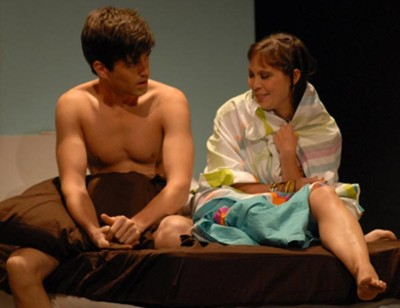

September 16 , 2009
Theatre Reviews
Written by Dan Callahan

Photo by Dixie Sheridan
Thomas Bradshaw’s The Bereaved has an ominous title; surely we’re all more than a little tired of plays and movies about grief where actors go through the familiar stages of loss and weep copious tears every other scene or so. Those unfamiliar with Bradshaw’s work might be worried, in the first twenty minutes, that he’s actually rehashing the ancient plot about a dying woman who tries to set her husband up with a viable wife after her demise. Politically correct lawyer Carol (McKenna Kerrigan) has an unexpected heart attack, and she coolly aligns her slackerish, adjunct professor husband Michael (Andrew Garman) with her best friend Katy (KK Moggie) when she’s on her deathbed. It’s only when Michael and Katy are alone together that the real tone of the play emerges; she urges him to share a sexual fantasy with her, and when he does, it’s fairly mild. When she tells him her much more far-out, violent and racially pointed sex fantasy, The Bereaved (which continues at the Wild Project through September 26) shifts into a confident farce that keeps spinning merrily like a top until it winds down and finishes unexpectedly and inconclusively, like an improvisation that has run its course.
Bradshaw is known as a provocateur, but this play isn’t likely to really offend anyone, unless we’re dealing with an audience member who is instantly upset by certain words and actions. Garman and Moggie have to engage in some fairly explicit sexual activity, but you never feel uncomfortable for them, as you sometimes do for actors in other plays (Adam Rapp, I’m looking at you). As Michael’s strait-laced son Teddy, Vincent Madero has two graphic, awkward humping sessions with his girlfriend Melissa (Jenny Seastone Stern), both of which are played comically, which takes the edge off of them. The play is best in the clothed scenes between Madero and Stern because they both have crack deadpan comic timing; both get big laughs just by saying simple declarative sentences with a total lack of affect and conviction (as a bonus, Madero does a classic spit take at one point).
The audience at The Bereaved all seemed to be having a terrific time, as if they were elderly matrons at a Neil Simon hit, and that’s because the play is “offensive” but never truly out for blood. It’s only after it’s over that you realize how dark a piece it could be; this is basically a comic dissection of the disasters that await you when you give in to your most indulgent impulses. It isn’t perfect; I could have done without the extended shout-out to Jamie Bufalino’s reliably god-awful sex column in Time Out New York. But The Bereaved is a play that might change according to its audience; clearly, Bradshaw’s work has some serious underpinnings that could be drawn out on a different night, or even in a different production. For all its flaws, I can’t get it out of my head, and there’s no doubt that it comes from a talented and original new voice in the theater.